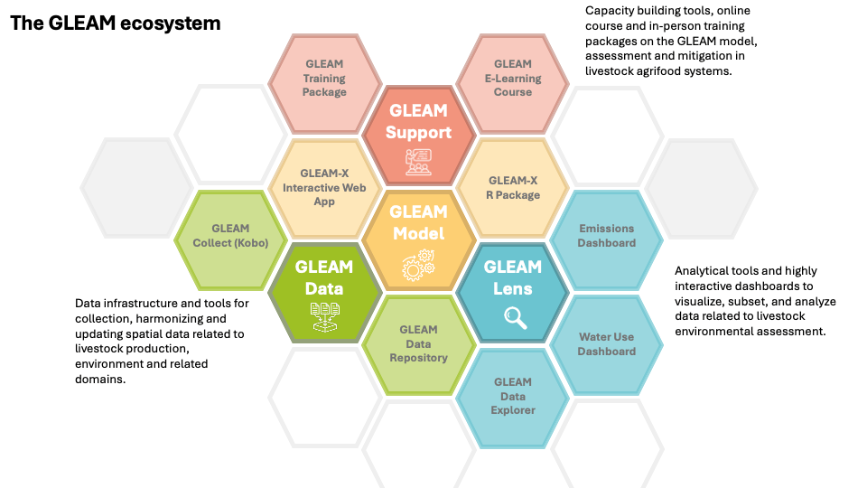

The gleam R package is one component of the broader
GLEAM ecosystem developed by FAO. The GLEAM ecosystem
offers a collection of integrated tools and services designed around the
GLEAM model to evaluate the environmental impacts of livestock agrifood
systems. By linking data, models, analytical tools, and capacity
development, the ecosystem forms a unified platform that advances
sustainable livestock system transformation through science and
data-driven approaches.

The GLEAM model within the GLEAM ecosystem
GLEAM Model
The GLEAM MODEL is the analytical heart of the ecosystem, designed around scientific robustness, transparency, and policy relevance. It applies a spatially explicit, life cycle-based framework to quantify environmental impacts across livestock supply chains and to assess mitigation options and scenarios.
gleam R package (this resource) provides full access to the core model equations and documentation. It supports custom workflows, batch processing, and advanced analytics on environmental impacts of livestock agrifood systems. It enables reproducible research, transparent documentation of assumptions, and easy integration with other analytical tools.
GLEAM-X Interactive Web Application is a user-friendly interface to the R package. It enables scenario building and comparison, and easily accessible analysis through visualization and interpretation of results. The application is designed for policymakers, analysts, and technical users to explore results and inform decision-making.
GLEAM Data
GLEAM DATA provides the data backbone of the GLEAM ecosystem, ensuring quality, consistency, traceability, and transparency of inputs used by the model.
- GLEAM Collect (KoBo survey): a field- and survey-based data collection tool that enables country teams and projects to collect primary data on livestock systems to perform GLEAM analysis.
- GLEAM Data Repository: a centralized, curated data infrastructure that stores livestock population and production data, feed resources and rations, emission factors, technical coefficients, and country- and system-specific parameters. Data are constantly updated using modern data collection methods that leverage AI technologies.
GLEAM Lens
GLEAM LENS provides user-friendly tools to explore GLEAM data and model results across species, production systems, and regions, and to dive more deeply into the underlying information. It streamlines communication for technical and policy audiences.
- GHG emissions dashboard: provides easy access to GLEAM results and offers tools to view and filter livestock system emissions at the highest level of analysis, by species, product, and production system.
- Water dashboard: allows visualization and filtering of water use data from livestock systems, including water used by different feed crops and water used as drinking water.
- GLEAM Data Explorer: offers visual and technical access to datasets and parameters, promoting transparency and comparative analysis.
GLEAM Support
GLEAM SUPPORT offers online and in-person resources for skill development and user help across all GLEAM tools, including the model, the GLEAM-X R package, the web application, dashboards, and data tools, for different audiences such as farmers, policymakers, finance institutions, and other stakeholders.
- GLEAM Training Package: delivers structured theory and practical exercises on environmental impact assessment, project appraisal, design, and data collection using GLEAM methods.
- GLEAM E-learning course: provides a self-paced online program on livestock environmental impacts and GLEAM methodology, with practical guidance for interpreting and applying GLEAM results in policy and technical analysis.
Further information on the GLEAM ecosystem and updates of its components can be found on the FAO GLEAM website.